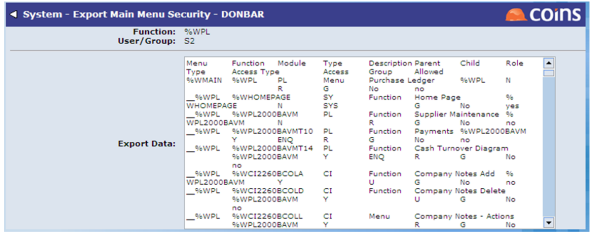
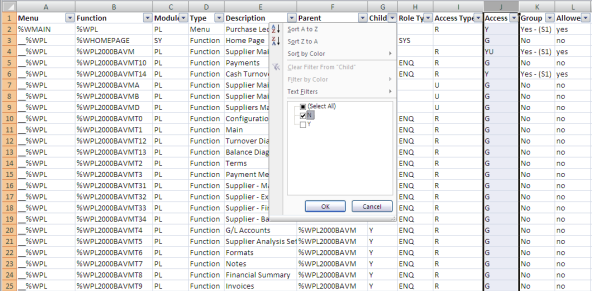
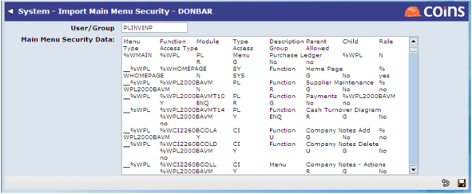

To Set Up Function Access Using a Spreadsheet:
- Go to Main Menu Security.
- Enter the user, group or sub group for which you want to specify access.
- Enter the code for the top-most menu for which you want to specify access. For example, you might set the security for a whole module at the same time.
- Click
 .
.
- Click the
 Export button in the header (next to the Menu field).
Export button in the header (next to the Menu field).

- Copy the content of the Export Data field, and paste it into a spreadsheet.
This exports not just the records visible in the browse but also the child functions for each of the main menu items. You might find it helpful to use the filters in Excel to show the records you are interested in; for example, you could filter out the child entries, or filter on all the functions with a particular parent.

- In the spreadsheet, set the desired access permissions by changing column J (Access), where:
- N = No access
- Y = Read-only access (if using Menu Item Security) or full access (if not using Menu Item Security)
- YU = Update access (only available if using Menu Item Security)
- G = Group access
(When re-importing data,
- Copy the contents of the updated spreadsheet. Make sure you remove the filters, or set them appropriately, before you copy the details.
- Go to Import Main Menu Security.
- Enter the code for the user, group or sub group you want to update (or to which you want to copy the security settings).

- Paste the contents of the spreadsheet into the field and click
 .
.